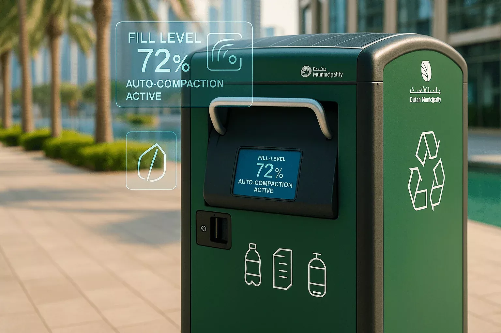

Open to opportunities✦
01 PERSONAL PORTFOLIO
Thilini Kavindya
ICT Undergraduate & Aspiring Software Developer
Hi, I'm Thilini Kavindya — an ICT undergraduate at the University of Vavuniya, passionate about software development, database applications and smart IoT solutions.
AVAILABLE01 / 06
Thilini KavindyaICT Undergraduate · Developer
Java
C#
SQL
IoT
02
GET TO KNOW ME
About Me.
A dedicated student, creator and continuous learner building practical solutions with purpose.
WHO I AM
I turn ideas into useful experiences.
I am an ICT undergraduate at the University of Vavuniya with a passion for building functional, database-driven applications and smart IoT solutions.
Along with my technical degree, I hold a Higher National Diploma in English Language & Literature from Aquinas College and an IT Diploma from IMBS Green Campus, giving me strong communication skills alongside technical expertise.
Mozilla Campus ClubDesign Team Member · University of Vavuniya
Problem Solving
Analytical thinking to break down complex tasks and build structured solutions.
Team Collaboration
Effective teamwork refined through Mozilla Campus Club and group projects.
Quick Learner
Adaptable to new frameworks, programming paradigms and modern tech stacks.
Communication
Strong communication skills supported by formal English Language & Literature studies.
03
TECHNICAL EXPERTISE
My Skills.
A growing toolkit across programming, databases, web development, IoT and design.
01
Programming
JavaC#PythonCC++
02
Frameworks & Web
.NET WinFormsADO.NETHTML5CSS3JavaScript
03
Data & Tools
SQL ServerMySQLGitGitHubFigmaIoT
04
SELECTED WORK
Featured Projects.
Academic and personal software projects — presented as an interactive, auto-moving showcase.

FEATURED PROJECTIoTArduino / ESP32Sensors
01 / FEATURED
Smart Dustbin — Waste Management System
An automated real-time waste monitoring solution that senses garbage fill levels, prevents overflowing, and sends alerts for timely collection. Built to enhance campus cleanliness and smart city infrastructure.
Fill-level monitoringSmart alertsIoT automation
Auto moving · hover to pause · drag on touch
05
LEARNING JOURNEY
Education & Certifications.
Education and certifications shaping both my technical foundation and creative thinking.
UNDERGRADUATE STUDIES
BSc (Hons) in Information & Communication Technology
University of Vavuniya
HND QUALIFICATION
Higher National Diploma in English Language & Literature
Aquinas College of Higher Studies
DIPLOMA
IT Diploma
IMBS Green Campus
CERTIFICATIONS
Learning beyond the classroom.
Python Programming
Centre for Open & Distance Learning (CODL), University of Moratuwa — Dept of CSE
Agile Project Management
HP LIFE, HP Foundation
Completed Feb 2026UI/UX for Beginners
UI/UX Fundamentals Qualification
Completed Apr 2026Generative AI
Artificial Intelligence & Prompt Engineering Fundamentals
06GET IN TOUCH
Get In Touch.
Open for software engineering opportunities, collaboration and interesting projects.
Have an idea?Let's talk.